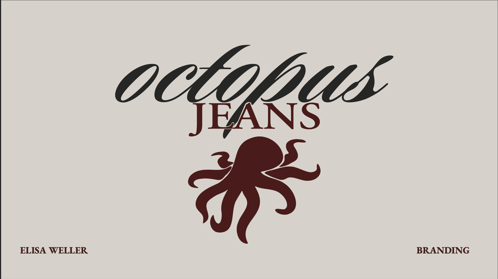
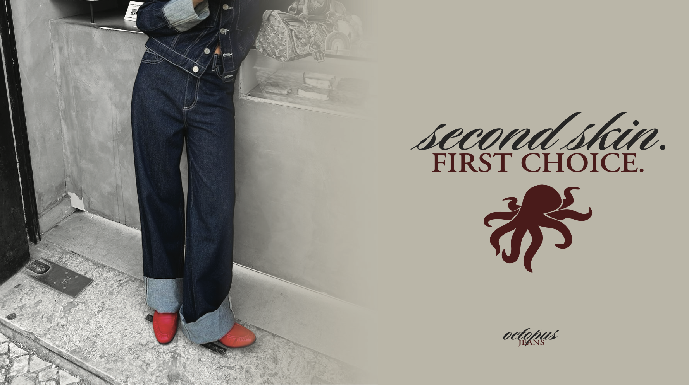
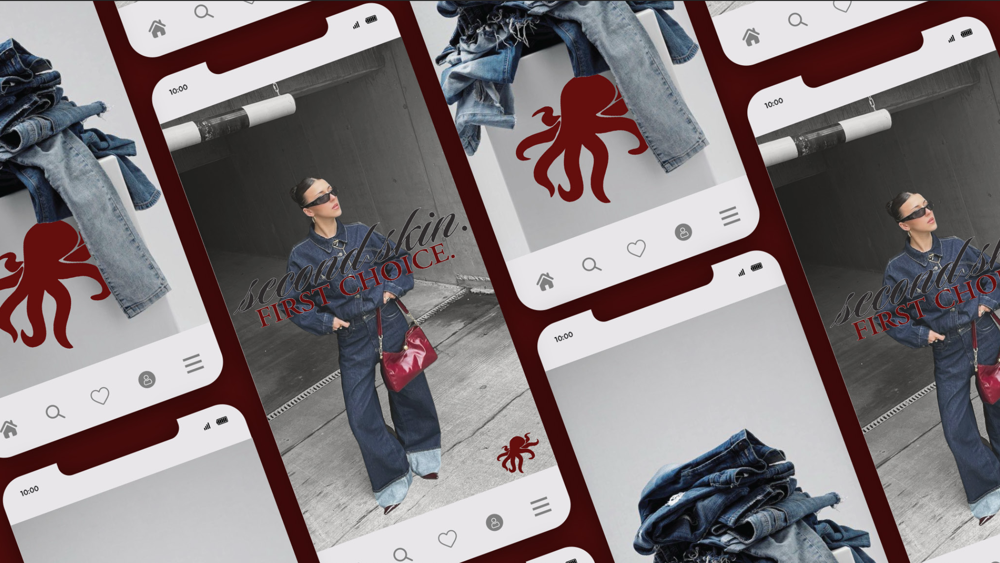
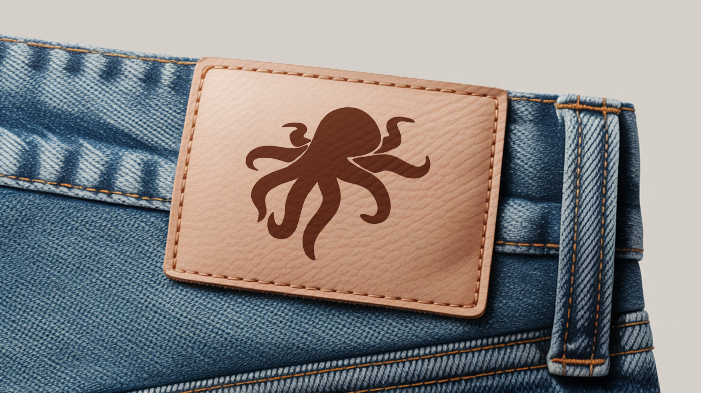
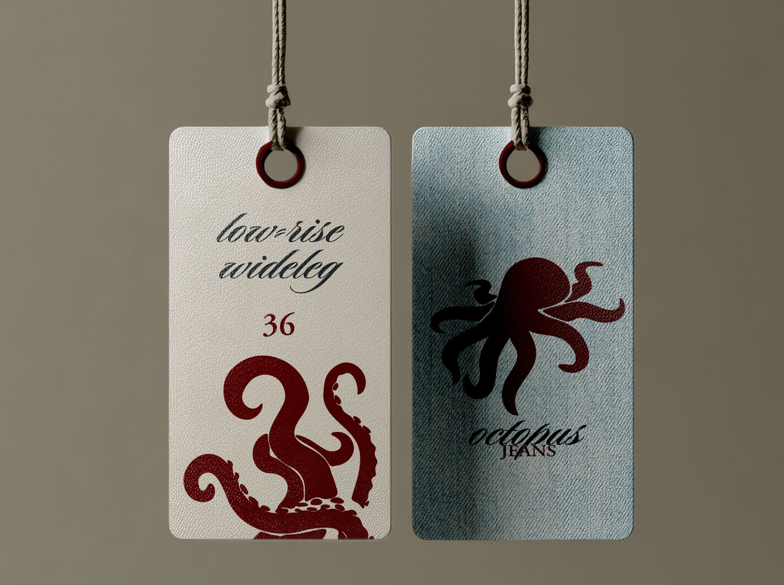
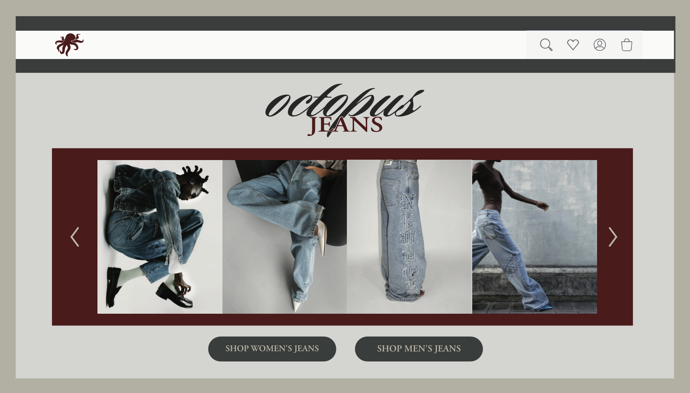

Branding · Moda
OCTOPUS Jeans
Una identidad visual para una marca de denim inspirada en la adaptabilidad del pulpo como símbolo de versatilidad, movimiento y transformación.

Contexto
OCTOPUS Jeans nace como una marca ficticia de denim pensada para adaptarse a distintos estilos de vida, contextos y movimientos.
El concepto se resume en el slogan “Second skin. First choice.”, que presenta la prenda como una segunda piel cómoda y natural.
Proceso
El pulpo se convierte en el núcleo visual de la marca. Su silueta simplificada transmite fluidez y movimiento, mientras que el sistema gráfico combina elementos orgánicos con una estética más estructurada.
La paleta utiliza un rojo profundo, gris oscuro y tonos neutros para generar contraste con el azul característico del denim.
Resultado
La identidad se aplica a etiquetas, piezas de marketing y distintos soportes de comunicación, manteniendo una imagen coherente, reconocible y adaptable.
Galería





Ficha técnica
- Disciplina
- Branding e identidad visual
- Sector
- Moda y denim
- Año
- 2026